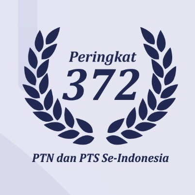

Why UMKT?
Universitas Muhammadiyah Kalimantan Timur (UMKT) merupakan salah satu dari 172 kampus Perguruan Tinggi yang dimiliki oleh Persyarikatan Muhammadiyah. Kampus ini terletak di Samarinda, ibu kota provinsi Kalimantan Timur. Kenapa harus memilih kuliah di UMKT? Mari kita tengok sekilas informasi tentang UMKT
UMKT Dalam Angka
- Cikal bakal UMKT adalah STIKES Muhammadiyah Samarinda dan STIE Muhammadiyah Samarinda
- STIE Muhammadiyah Samarinda berdiri pada 15 September 1981
- STIKES Muhammadiyah Samarinda berdiri pada tahun 2009 dengan Akreditasi Institusi B (Sangat Baik)
- UMKT memiliki 4 Fakultas dan 16 Program Studi
- Jumlah mahasiswa aktif UMKT lebih dari 2.000 orang
- Jumlah dosen UMKT lebih dari 120 orang
- Jumlah karyawan UMKT lebih dari 70 orang
Kerjasama Dalam dan Luar Negeri
- Kerjasama Fakultas Kesehatan dengan Chulalongkorn University Thailand
- Double Degree Programs (proses inisiasi): UMKT-Kingston Univ. UK; UMKT-Derby Univ. UK; UMKT-Charles Darwin Univ. Australia; UMKT-Kyungdong Univ. Korea Selatan; UMKT-NTUST Taiwan; UMKT-NTUT Taiwan
- Kerjasama Penguatan SDM dengan Universitas Muhammadiyah Surakarta (Terakreditasi Institusi A — Unggul, dan PTS Terbaik di Indonesia berdasarkan Ranking Internasional QS Star 2016-2018)
 |
UMKT Peringkat 1 PTS se Kaltimtara Universitas Muhammadiyah Kalimantan Timur (UMKT) merupakan Perguruan Tinggi Swasta terbaik peringkat 1 se-Kaltimtara (Kalimantan Timur - Kalimantan Utara). |
 |
UMKT Peringkat 6 se Kalimantan Universitas Muhammadiyah Kalimantan Timur (UMKT) merupakan Perguruan Tinggi terbaik peringkat 6 se Kalimantan. |
|  | UMKT Peringkat 372 se Indonesia Universitas Muhammadiyah Kalimantan Timur (UMKT) merupakan Perguruan Tinggi terbaik peringkat 6 se Kalimantan. |